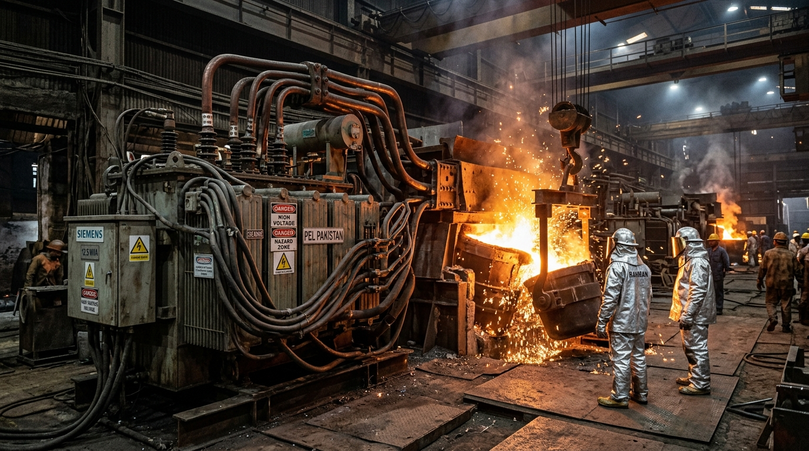

<!DOCTYPE html>
<html lang="en">
<head>
<!-- Google tag (gtag.js) -->
<script async src="https://www.googletagmanager.com/gtag/js?id=GT-MK4LGQ9D"></script>
<script>
  window.dataLayer = window.dataLayer || [];
  function gtag(){dataLayer.push(arguments);}
  gtag('js', new Date());
  gtag('config', 'GT-MK4LGQ9D');
</script>
<!-- Microsoft Clarity -->
<script type="text/javascript">
    (function(c,l,a,r,i,t,y){
        c[a]=c[a]||function(){(c[a].q=c[a].q||[]).push(arguments)};
        t=l.createElement(r);t.async=1;t.src="https://www.clarity.ms/tag/"+i;
        y=l.getElementsByTagName(r)[0];y.parentNode.insertBefore(t,y);
    })(window, document, "clarity", "script", "x1wrvodwit");
</script>
<meta charset="UTF-8">
<link rel="icon" type="image/png" href="/images/transfoline_logo-removebg-preview.png">
<link rel="apple-touch-icon" href="/images/transfoline_logo-removebg-preview.png">
<meta name="viewport" content="width=device-width, initial-scale=1.0">

<!-- Primary SEO -->
<title>Commercial Solar Substation Cost &amp; ROI in Pakistan</title>
<meta name="description" content="Commercial solar substation cost in Pakistan: 500kW, 1MW, and 2MW Capex breakdowns, 11kV step-up transformer pricing, and 3-year payback calculations.">
<meta name="keywords" content="100kw solar system price in pakistan, 50kw solar system price in pakistan, solar panel price in pakistan, commercial solar epc contractor pakistan, solar system price in pakistan">
<meta name="robots" content="index, follow, max-snippet:-1, max-image-preview:large, max-video-preview:-1">
<meta name="author" content="Engr. Tariq Mehmood | Senior Commercial Substation Cost &amp; EPC Director">
<link rel="canonical" href="https://transfoline.com.pk/blog/commercial-industrial-solar-substation-cost-roi-pakistan.html">

<!-- Open Graph -->
<meta property="og:type" content="article">
<meta property="og:site_name" content="TransfoLine">
<meta property="og:title" content="Commercial Solar Substation Cost in Pakistan: 500 kW, 1 MW &amp; 2 MW Industrial ROI">
<meta property="og:description" content="Itemized capital expenditure and financial ROI model for industrial solar 11kV substations in Pakistan.">
<meta property="og:url" content="https://transfoline.com.pk/blog/commercial-industrial-solar-substation-cost-roi-pakistan.html">
<meta property="og:image" content="https://transfoline.com.pk/images/steel-furnace-transformers.jpg">
<meta property="og:locale" content="en_PK">

<!-- Schema.org -->
<script type="application/ld+json">
{
  "@context": "https://schema.org",
  "@graph": [
    {
      "@type": "BlogPosting",
      "headline": "Commercial Solar Substation Cost in Pakistan: 500 kW, 1 MW & 2 MW Industrial ROI",
      "image": "https://transfoline.com.pk/images/steel-furnace-transformers.jpg",
      "datePublished": "2026-08-28T08:00:00+05:00",
      "dateModified": "2026-08-28T08:00:00+05:00",
      "author": {
        "@type": "Person",
        "name": "Engr. Tariq Mehmood",
        "jobTitle": "Lead Commercial Substation Cost & EPC Director"
      },
      "publisher": {
        "@type": "Organization",
        "name": "TransfoLine (Private) Limited",
        "logo": "https://transfoline.com.pk/images/transfoline-logo.webp"
      },
      "mainEntityOfPage": "https://transfoline.com.pk/blog/commercial-industrial-solar-substation-cost-roi-pakistan.html"
    },
    {
      "@type": "BreadcrumbList",
      "itemListElement": [
        {"@type": "ListItem", "position": 1, "name": "Home", "item": "https://transfoline.com.pk/"},
        {"@type": "ListItem", "position": 2, "name": "Knowledge Hub", "item": "https://transfoline.com.pk/blog.html"},
        {"@type": "ListItem", "position": 3, "name": "Solar Substation Cost & ROI"}
      ]
    }
  ]
}
</script>
<link rel="stylesheet" href="../styles.css">
</head>
<body>

<header class="nav" id="nav">
  <div class="sheet nav__in">
    <a href="../index.html" class="brand"></a>
    <nav class="nav__links">
      <a href="../index.html">Home</a>
      <a href="../index.html#why">Why Us</a>
      <a href="../index.html#services">Services</a>
      <a href="../index.html#process">Process</a>
      <a href="../index.html#faq">FAQ</a>
      <a href="../contact-us.html">Contact</a>
    </nav>
    <div class="nav__right">
      <a href="tel:+923144641288" class="nav__tel"><span class="sq" aria-hidden="true"></span>0314 4641288</a>
      <a href="../contact-us.html" class="btn btn--solid btn--sm">Get Quote</a>
      <button class="nav__burger" id="burger" aria-label="Menu" aria-expanded="false"><span></span><span></span><span></span></button>
    </div>
  </div>
  <div class="nav__mobile" id="mobileMenu">
    <a href="../index.html">Home</a>
    <a href="../index.html#services">Services</a>
    <a href="../contact-us.html">Contact</a>
  </div>
</header>

<main class="post-wrap">
  <div class="sheet">
    <nav class="breadcrumb">
      <a href="../index.html">Home</a><span class="sep">/</span>
      <a href="../blog.html">Blog</a><span class="sep">/</span>
      <span aria-current="page">Solar Substation Cost &amp; ROI</span>
    </nav>

    <article class="post">
      <header class="post-header">
        <span class="feat__ref">FINANCIAL ECONOMICS &amp; EPC BUDGETING</span>
        <h1 class="post-title">Commercial Solar Substation Cost in Pakistan: 500 kW, 1 MW &amp; 2 MW Industrial ROI</h1>
        <div class="post-meta">
          <span>By Engr. Tariq Mehmood</span> &bull; <span>August 28, 2026</span> &bull; <span>15 Min Read</span> &bull; <span>Financial Model</span>
        </div>
      </header>

      <div class="post-hero__banner">
        
      </div>

      <div class="post-body">
        <p class="lede">For industrial Chief Financial Officers (CFOs) and factory owners in Pakistan evaluating a <strong>500 kW to 2 MW commercial solar photovoltaic plant</strong>, budgeting focuses heavily on Tier-1 solar panels and string inverters. However, the <strong>medium-voltage (11 kV) interconnection substation</strong>—comprising the step-up transformer, 11kV vacuum circuit breaker (VCB) panel, bi-directional metering CT/PTs, and DISCO grid synchronization—represents approximately <strong>12% to 18% of total project Capex</strong>. Accurately modeling this substation investment against monthly tariff reductions yields an exceptional financial return on investment (ROI) with complete project payback in under 3 years.</p>

        <h2>1. Complete Itemized Capex Breakdown for Industrial Solar Substations</h2>
        <p>Below is a realistic market-rate cost breakdown for 500 kW, 1.0 MW, and 2.0 MW industrial solar grid-interconnection substations in Pakistan (quoted in PKR Millions):</p>

        <div style="overflow-x:auto;margin:24px 0;">
          <table class="price-table" style="width:100%;border-collapse:collapse;border:1px solid var(--line-2);background:var(--card);">
            <thead>
              <tr style="background:var(--paper-2);border-bottom:1px solid var(--line-2);">
                <th style="padding:12px;font-family:var(--mono);font-size:11px;text-transform:uppercase;color:var(--ink-3);text-align:left;">Substation Equipment / Service</th>
                <th style="padding:12px;font-family:var(--mono);font-size:11px;text-transform:uppercase;color:var(--ink-3);text-align:left;">500 kW Plant (PKR M)</th>
                <th style="padding:12px;font-family:var(--mono);font-size:11px;text-transform:uppercase;color:var(--ink-3);text-align:left;">1.0 MW Plant (PKR M)</th>
                <th style="padding:12px;font-family:var(--mono);font-size:11px;text-transform:uppercase;color:var(--ink-3);text-align:left;">2.0 MW Plant (PKR M)</th>
              </tr>
            </thead>
            <tbody>
              <tr style="border-bottom:1px solid var(--line);"><td style="padding:12px;font-weight:600;font-family:var(--cond);font-size:16px;">Inverter Step-Up Transformer (0.8kV/11kV Pure Copper)</td><td style="padding:12px;">PKR 3.2M (630 kVA)</td><td style="padding:12px;">PKR 5.4M (1250 kVA Dual-Sec)</td><td style="padding:12px;">PKR 9.8M (2500 kVA Quad-Sec)</td></tr>
              <tr style="border-bottom:1px solid var(--line);"><td style="padding:12px;font-weight:600;font-family:var(--cond);font-size:16px;">11kV VCB Switchgear Panel &amp; Protection Relays</td><td style="padding:12px;">PKR 2.4M</td><td style="padding:12px;">PKR 3.2M</td><td style="padding:12px;">PKR 5.6M (Dual Incomer)</td></tr>
              <tr style="border-bottom:1px solid var(--line);"><td style="padding:12px;font-weight:600;font-family:var(--cond);font-size:16px;">11kV Bi-Directional CT/PT Metering Unit &amp; Green Meter</td><td style="padding:12px;">PKR 1.2M</td><td style="padding:12px;">PKR 1.6M</td><td style="padding:12px;">PKR 2.2M</td></tr>
              <tr style="border-bottom:1px solid var(--line);"><td style="padding:12px;font-weight:600;font-family:var(--cond);font-size:16px;">11kV XLPE Medium-Voltage Cabling &amp; Earthing Pits</td><td style="padding:12px;">PKR 1.1M</td><td style="padding:12px;">PKR 1.8M</td><td style="padding:12px;">PKR 3.4M</td></tr>
              <tr style="border-bottom:1px solid var(--line);"><td style="padding:12px;font-weight:600;font-family:var(--cond);font-size:16px;">DISCO Grid Study, NEPRA Licensing &amp; NOC Liaison</td><td style="padding:12px;">PKR 0.8M</td><td style="padding:12px;">PKR 1.2M</td><td style="padding:12px;">PKR 1.8M</td></tr>
              <tr style="background:var(--paper-2);font-weight:700;"><td style="padding:12px;font-size:16px;color:var(--accent-ink);">Total Substation Turnkey EPC Capex</td><td style="padding:12px;color:var(--accent-ink);">PKR 8.7 Million</td><td style="padding:12px;color:var(--accent-ink);">PKR 13.2 Million</td><td style="padding:12px;color:var(--accent-ink);">PKR 22.8 Million</td></tr>
            </tbody>
          </table>
        </div>

        <h2>2. Financial Return on Investment (ROI) &amp; Payback Period Calculations</h2>
        <p>To calculate the economic payback of an industrial solar substation, consider a typical <strong>1.0 MW (1,000 kW) rooftop installation</strong> at a textile mill in Lahore or Faisalabad:</p>

        $$	ext{Annual Generation} = 1,000 	ext{ kW} 	imes 4.2 	ext{ Peak Sun Hours/Day} 	imes 365 	ext{ Days} 	imes 0.82 	ext{ (PR)} pprox 1,257,000 	ext{ kWh/Year}$$

        <p>At an average industrial blended grid electricity tariff of <strong>PKR 52.00 per kWh</strong>:</p>
        <ul>
          <li><strong>Gross Annual Electricity Savings:</strong> $1,257,000 	ext{ kWh} 	imes 	ext{PKR } 52.00 = \mathbf{	ext{PKR } 65.36 	ext{ Million per Year}}$.</li>
          <li><strong>Total Turnkey Project Capex (Panels + Inverters + 11kV Substation):</strong> $pprox 	ext{PKR } 145 	ext{ Million}$.</li>
          <li><strong>Simple Payback Period:</strong> $rac{	ext{PKR } 145 	ext{M}}{	ext{PKR } 65.36 	ext{M/Year}} = \mathbf{2.22 	ext{ Years}}$.</li>
          <li><strong>Levelized Cost of Electricity (LCOE over 25 Years):</strong> Under $	ext{PKR } 6.50 	ext{ per kWh}$ (including annual O&amp;M and transformer maintenance).</li>
        </ul>

        <h2>3. Major Factors Influencing Substation Cost Optimization</h2>
        <p>Industrial procurement teams can optimize capital expenditure by focusing on three strategic engineering decisions:</p>
        <ol>
          <li><strong>Selecting 800V String Inverters vs. 400V Inverters:</strong> Stepping up from 800V AC cuts low-voltage cable thickness in half, reducing copper conductor cabling costs between inverters and the transformer by up to 45%.</li>
          <li><strong>Procuring Direct from TransfoLine (OEM):</strong> Eliminating middlemen and commercial resellers reduces transformer procurement costs by 15%–20% while securing direct 12-month manufacturer replacement warranties.</li>
          <li><strong>Pre-Configured Outdoor Compact Substations (CSS / Skid):</strong> Factory-integrated skid substations (combining the step-up transformer, 11kV VCB switchgear, and LT distribution inside a weatherproof IP54 enclosure) reduce civil masonry plinth construction time by 3 weeks.</li>
        </ol>

        <div class="svc-cta" style="margin:36px 0;border:1px solid var(--line-2);">
          <div class="sheet svc-cta__inner" style="padding:28px 24px;">
            <div class="svc-cta__text">
              <span class="lab" style="color:var(--accent);"><span class="dot" aria-hidden="true"></span>&nbsp;&nbsp;CAPEX BUDGETING &amp; QUOTES</span>
              <h3 style="color:var(--paper);font-size:24px;margin:8px 0;">Download Our Industrial Solar Substation Cost Model</h3>
              <p style="color:var(--line);font-size:14px;max-width:55ch;">Request a customized financial feasibility sheet and itemized 11kV equipment quotation tailored to your factory’s sanctioned load.</p>
            </div>
            <div style="display:flex;gap:12px;align-items:center;">
              <a href="../solar-inverter-transformers-epc.html" class="btn btn--solid">Explore Solar Substation <span class="ar">→</span></a>
              <a href="tel:+923144641288" class="btn btn--line" style="border-color:var(--line);color:var(--paper);">Call 0314 4641288</a>
            </div>
          </div>
        </div>

      </div>
    </article>
  </div>
</main>

<!-- ============ FOOTER ============ -->
<footer class="footer">
  <div class="sheet">
    <!-- FOOTER TOP: BRAND, DIRECT CONTACT & SOCIALS -->
    <div class="footer__top">
      <div class="footer__brand-box">
        <a href="../index.html#top" class="brand"></a>
        <p>TransfoLine (Private) Limited — Pakistan's premier turnkey industrial solar EPC contractor, high-voltage substation manufacturer, and certified testing specialist since 2008.</p>
      </div>
      <div class="footer__top-contact">
        <div class="footer__direct-links">
          <a href="tel:+923144641288" class="footer__c-item"><span class="sq"></span> 0314 4641288</a>
          <a href="mailto:info@transfoline.com.pk" class="footer__c-item"><span class="sq"></span> info@transfoline.com.pk</a>
          <span class="footer__c-item"><span class="sq"></span> Raiwind Road, Lahore</span>
        </div>
        <div class="footer__socials">
          <a href="https://pk.linkedin.com/company/transfoline" target="_blank" rel="noopener"><svg width="14" height="14" viewBox="0 0 24 24" fill="currentColor"><path d="M19 3a2 2 0 0 1 2 2v14a2 2 0 0 1-2 2H5a2 2 0 0 1-2-2V5a2 2 0 0 1 2-2h14m-.5 15.5v-5.3a3.26 3.26 0 0 0-3.26-3.26c-.85 0-1.84.52-2.28 1.3v-1.11h-2.79v8.37h2.79v-4.93c0-.77.62-1.4 1.39-1.4a1.4 1.4 0 0 1 1.4 1.4v4.93h2.75M6.46 10.9v8.37H9.2V10.9H6.46M7.83 6.45c-.88 0-1.6.72-1.6 1.6 0 .89.72 1.6 1.6 1.6.89 0 1.61-.71 1.61-1.6 0-.88-.72-1.6-1.61-1.6Z"/></svg> LinkedIn</a>
          <a href="https://www.facebook.com/p/Transfo-Line-100089514231981/" target="_blank" rel="noopener"><svg width="14" height="14" viewBox="0 0 24 24" fill="currentColor"><path d="M12 2.04c-5.5 0-10 4.49-10 10.02 0 5 3.66 9.15 8.44 9.9v-7H7.9v-2.9h2.54V9.85c0-2.51 1.49-3.89 3.78-3.89 1.09 0 2.23.19 2.23.19v2.47h-1.26c-1.24 0-1.63.77-1.63 1.56v1.88h2.78l-.45 2.9h-2.33v7a10 10 0 0 0 8.44-9.9c0-5.53-4.5-10.02-10-10.02Z"/></svg> Facebook</a>
          <span class="stat-tag is-ok">24/7 Support</span>
        </div>
      </div>
    </div>

    <!-- MAIN 4 EQUAL-HEIGHT COLUMNS -->
    <div class="footer__grid">
      <!-- COLUMN 1: TRANSFORMERS -->
      <div class="footer__col">
        <h4>Transformers</h4>
        <div class="footer__links">
          <a href="../new-used-transformers.html">New &amp; Certified-Used</a>
          <a href="../solar-inverter-transformers-epc.html">Solar Step-Up Transformers</a>
          <a href="../steel-furnace-transformers.html">Steel Furnace Transformers (OFWF)</a>
          <a href="../dry-type-cast-resin-transformers.html">Cast Resin Dry-Type</a>
          <a href="../high-voltage-power-transformers.html">High-Voltage Power (MVA)</a>
          <a href="../spare-parts.html">Spare Parts &amp; Supplies</a>
        </div>
      </div>

      <!-- COLUMN 2: ENGINEERING & EPC -->
      <div class="footer__col">
        <h4>Engineering &amp; EPC</h4>
        <div class="footer__links">
          <a href="../turnkey-substation-epc.html">Turnkey Substation EPC</a>
          <a href="../transformer-repair.html">Repair &amp; Rewinding</a>
          <a href="../oil-dehydration.html">Oil Dehydration &amp; BDV</a>
          <a href="../preventive-maintenance-amc.html">Maintenance &amp; AMC</a>
          <a href="../ht-lt-panel-installation.html">HT / LT Panel Installation</a>
          <a href="../town-electrification.html">Town Electrification</a>
          <a href="../testing-commissioning.html">Testing &amp; Commissioning</a>
        </div>
      </div>

      <!-- COLUMN 3: SOLAR & RENEWABLE -->
      <div class="footer__col">
        <h4>Solar &amp; Renewable</h4>
        <div class="footer__links">
          <a href="../solar-energy-solutions.html">Commercial &amp; Industrial Solar</a>
          <a href="../solar-panels-inverters-cables.html">Panels, Inverters &amp; Cables</a>
          <a href="../100kw-solar-system-price-pakistan.html">100 kW Commercial System</a>
          <a href="../500kw-industrial-solar-system.html">500 kW Industrial Substation</a>
          <a href="../1mw-solar-power-plant-pakistan.html">1 MW to 5 MW Solar Plants</a>
          <a href="../ev-charging-solutions-pakistan.html">Commercial EV Fast Charging</a>
          <a href="../calculators.html" style="color:var(--accent-ink);font-weight:600;">Engineering Calculators Hub <span class="ar">→</span></a>
        </div>
      </div>

      <!-- COLUMN 4: KNOWLEDGE & HUBS -->
      <div class="footer__col">
        <h4>Knowledge &amp; Cities</h4>
        <div class="footer__links">
          <a href="../blog.html" style="color:var(--accent-ink);font-weight:600;">Blog &amp; Knowledge Hub <span class="ar">→</span></a>
          <a href="../transformer-services-lahore.html">Lahore (Head Office)</a>
          <a href="../transformer-services-karachi.html">Karachi Coastal Division</a>
          <a href="../transformer-services-islamabad.html">Islamabad Capital Hub</a>
          <a href="../transformer-services-rawalpindi.html">Rawalpindi Industrial</a>
          <a href="../transformer-services-faisalabad.html">Faisalabad Textile Hub</a>
          <a href="../transformer-services-multan.html">Multan &amp; South Punjab</a>
          <a href="../transformer-services-gilgit.html">Gilgit &amp; Northern Areas</a>
        </div>
      </div>
    </div>

    <!-- FOOTER BASE -->
    <div class="footer__base">
      <span>© 2026 TRANSFO LINE (PRIVATE) LIMITED</span>
      <span>D-U-N-S® Registered: <a href="https://www.dnb.com/business-directory/company-profiles.transfo_line_(private)_limited.6e4d401fc4a6bd30db45ae2a751837d4.html" target="_blank" rel="noopener" class="footer__credit">75-794-4658</a></span>
      <span>Designed &amp; Developed by <a href="https://webcraftio.com" target="_blank" rel="noopener" class="footer__credit">WebCraftio</a></span>
    </div>
  </div>
</footer>

<script src="../app.js"></script>
<script src="../tracking.js"></script>
</body>
</html>
